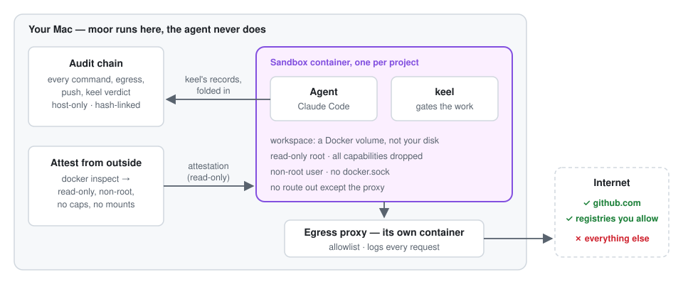
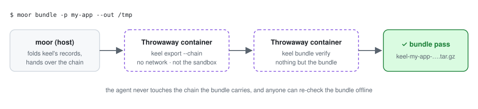

Let AI agents build freely.
Never let them touch your Mac.
moor gives every project its own sealed sandbox. The agent — Claude Code today — and keel work inside it with no access to your disk and no way onto the internet except an allowlist. moor watches from outside and keeps a tamper-evident record of everything that happened — where the agent can't touch it.
The problem
An agent that can build your project can also read your Keychain.
Coding agents are useful precisely because they run shell commands, write files, and reach the network without asking permission for every step. That's also exactly the access profile of something you don't want running unconstrained on the machine that holds your SSH keys, your other repos, and your browser sessions.
Most "sandboxing" is a shell script and good intentions. moor makes the boundary structural: no bind mount to any host path, no Docker socket, a network that has no route out except through an explicit allow-list — verified against a live container every time, not assumed from the config file.
How it works
A box for the agent. The record stays outside it.
Three things, and each one is checked against the live container — not assumed from a config file.

Why trust it
Value, quality, security, reliability — each one checkable
Nothing below is a promise about intent. Every line is something a test, a real container, or keel's own verifier confirms.
Let the agent actually work
- Real builds, real tests, real pushes — the agent installs packages and ships to GitHub, inside the box.
- One command per project:
moor new, and it's up with keel ready inside. - Describe an outcome, get a gated feature:
moor reciperuns the pipeline and stops only where you should decide.
Gated by keel, every time
- Spec → plan → build → gates → sign-off, with a test behind every acceptance criterion.
- Real names on every approval — your git identity, carried into the sandbox without writing a file.
- 129 unit tests, clippy clean, and a real-container end-to-end run on every pull request.
Your Mac stays yours
- No host bind mount, no docker.sock — the box has no path to your keys, repos or browser sessions.
- Default-deny network: an internal-only network plus an allowlisting proxy. No bypass route exists.
- The agent can't rewrite the record: moor holds the pen, from outside the box, and keel's verifier checks every link.
Checked, not claimed
- Attested on every
moor up: read-only, non-root, no capabilities, no mounts — or marked unproven, never assumed. - Breakout probes that must fail: canary domain, root-fs write, docker.sock — every selftest.
- keel pinned in the image: a rebuild installs exactly the version you chose, never a stale cache.
The big value add
Write down what you want. The agent loop runs — until it needs you.
Driving keel by hand means typing a long, exact sequence
every time: spec new → author it → gate g0 →
approve → plan → author it →
gate g1 → approve → run →
approve --stage merge. moor recipe takes one
loosely-worded description of the outcome and drives that whole
sequence itself — including fixing its own failing gates — stopping
only at the points a human should actually decide something.
Autonomous, not unchecked: a failing spec/plan gate
gets a bounded self-correction loop restricted to Write/
Edit only — the agent can fix exactly what the gate named,
never run arbitrary commands to do it. The real build step
(keel run) gets no auto-retry beyond a small attempt cap —
that step has full tool access, so it stops and hands a human the
evidence instead of iterating unattended. See
ADR-0005
for the full design and a real run's transcript, gate failures and all.
What it actually does
Every control here is checked, not claimed
moor selftest asserts every one of these against a running
container — a future change that weakens one is caught immediately,
not discovered during an incident.
No host bind mount, ever
Project code lives only in a Docker-managed volume. The container has
no path into your Mac's filesystem — reachable only via moor
shell or a real git push.
Default-deny egress
An internal network with no internet route of its own, plus a forward-proxy sidecar that allow-lists by hostname. Everything else gets a 403, logged.
One tamper-evident record
Every command, egress verdict, keel verdict and git push — with
the exact commit it pushed — in one hash chain, in keel's own format, so
keel chain verify checks it too.
Active breakout battery
Beyond static config checks, selftest actually tries a
canary-domain connection, a write to the read-only rootfs, and a
docker.sock probe — and expects every one to fail.
Gated delivery via keel
Spec → plan → build → gate → merge, with a runnable oracle behind every acceptance criterion. Real build/test/lint commands, executed inside the sandbox, not simulated.
Keychain-sourced secrets
moor secrets set my-app ANTHROPIC_API_KEY once — every
future moor up just works. Redacted from the audit chain
automatically, wherever it was resolved from.
No docker.sock, never
A sandbox with the Docker socket can control every other container on the machine. Treated as equivalent to host root, and never granted — checked, not just documented.
Real GitHub workflow
moor new --github creates the repo, clones with a
credential helper that never puts the token in ps output, and
ships with a real git push through the egress gateway.
moor bundle: proof, not a story
Builds keel's evidence bundle with moor's record inside — in a throwaway container, never the sandbox — and verifies it before you send it.
Attested from outside
On every moor up, moor reads the running container with
docker inspect and hands keel what it proved. A repo can refuse
to run an agent without it.
Migrate what you already have
moor import my-app --from ~/Repos/my-app transfers full
history via a one-shot git bundle — never a bind mount —
and preserves an existing GitHub remote automatically.
Keel shortcuts, no boilerplate
moor keel <args> and moor view <slug>
spec|plan|tasks drop the run <project> --
you'd otherwise repeat on every call. Project is inferred from
whichever sandbox is actually up, and the CLI always prints which
one it picked before it runs anything.
Architecture
One shared boundary, not one shared kernel of trust
keel — the gated orchestrator that drives the agent — runs inside the sandbox, because keel itself does no isolation. The isolation is built entirely at the container layer, underneath it.
- the
moorCLI - ~/.moor/ audit trail
- your other repos, Keychain
- keel + agent CLI + toolchain
- workspace = named volume only
- non-root, read-only rootfs
- default-deny forward proxy
- allow-list by hostname
- every request logged
The sandbox is attached only to an internal: true network —
Docker gives it no route to the internet at all. Its only path out
is through the egress gateway, which is attached to both that
internal network and the real one. No bypass route exists, not even
by ignoring HTTP_PROXY.
Who this is for
Give an agent real access, on purpose, inside a box you trust
Running Claude Code against a repo you haven't fully vetted
A cloned repo's .keel/keel.toml, or the agent's own output, is
untrusted input the moment it exists. moor makes the blast
radius one throwaway container, never the machine underneath it.
A one-Mac fleet of AI-assisted projects
moor new/up/down/shell makes spinning up a new
isolated project as easy as the one it replaces — ideation to
shipped, without hand-rolling Docker Compose each time.
Proving what an agent actually did
A hash-chained, exportable audit trail — every command, every egress verdict, every push — for teams that need evidence an agent's work is trustworthy, not just a claim that it is.
Security-conscious solo builders
Let an agent run npm install, hit real registries, and push to
GitHub — freely, inside a sandbox that structurally cannot reach
your SSH keys, your other repos, or anything else on the host.
Proof, not vibes
Every claim on this page was tested against a real container
- e2e tests/e2e.sh live-tampers with a real project's audit chain file and confirms
--verifycatches it — not a mocked test. - keel keel's own verifier accepts moor's record, and a real keel run inside a real sandbox bundles to
bundle passon every check — in the same end-to-end suite. - walkthrough A real project run found two genuine keel gate violations (an under-scoped test file, an under-scoped lockfile) and three real moor bugs — all fixed and documented, not hidden.
- decision record Runtime choice is a sourced ADR, not a guess: gVisor and Apple's native
containertool were both investigated and rejected with cited evidence, including a confirmed open security hole in the alternative. - CI cargo audit/deny, shellcheck, hadolint, gitleaks, and a Trivy CVE scan of every built image run on every push — verified by actually watching the real GitHub Actions run to completion, not just written and assumed to work.

moor bundle — built and verified outside the sandbox.Quick start